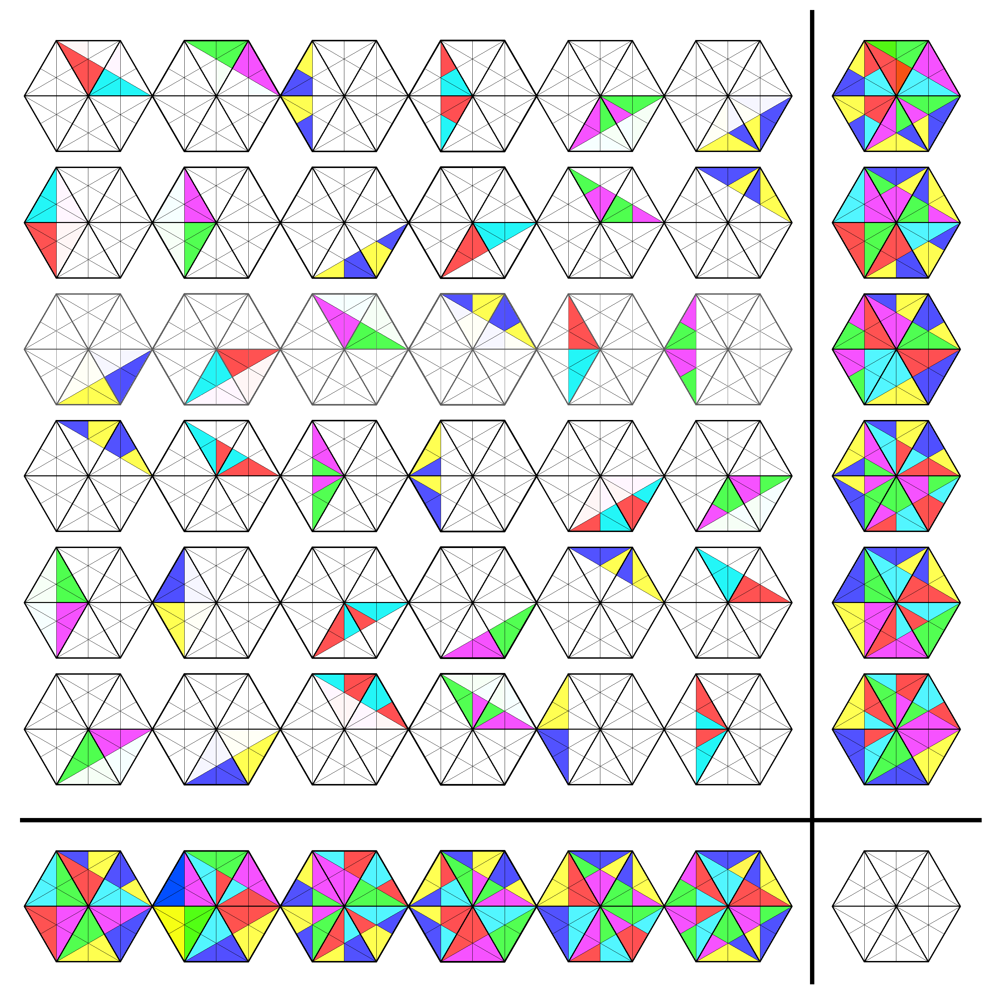
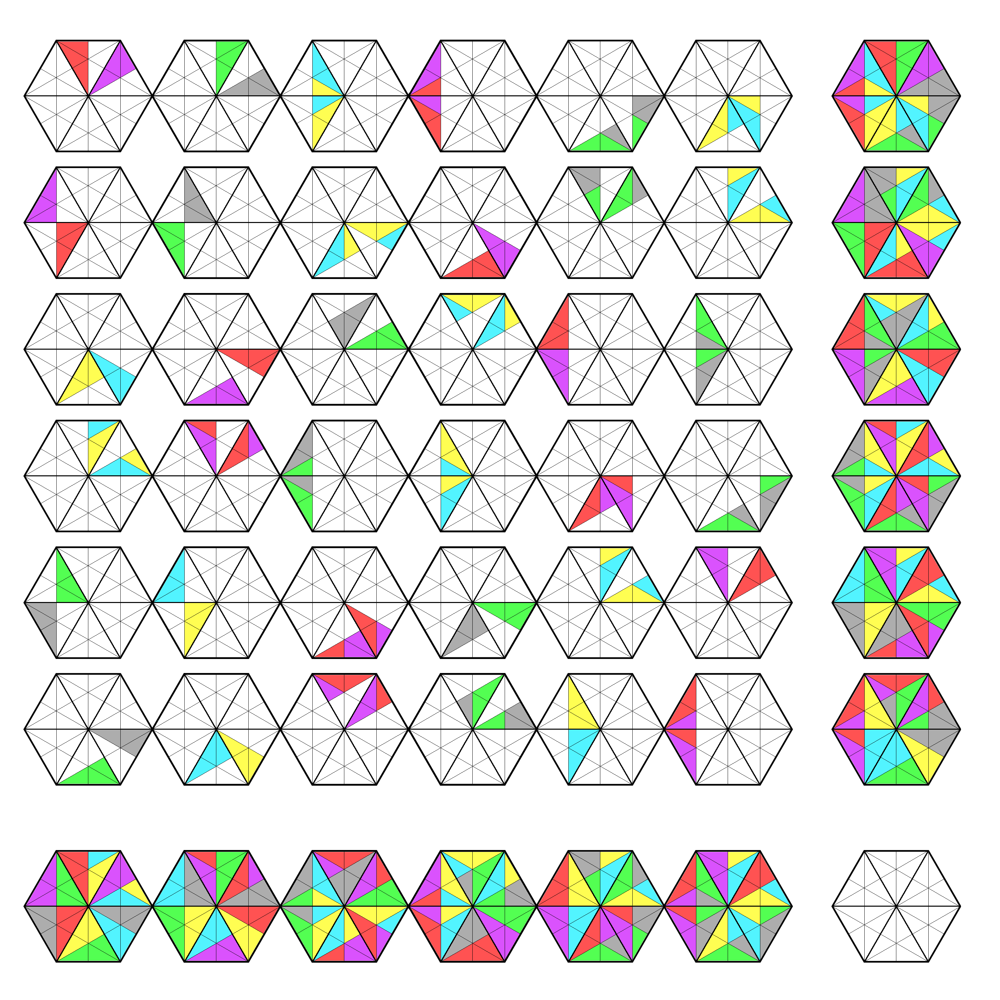

AME state – a toy model
update: 2023-02-11 by W. Bruzda
Technical note. This web page uses SVG mechanism to draw primitives, as well as js-based MathJax library for mathematical typesetting. Make sure your browser supports such features to fully experience the content.
An absolutely maximally entangled (AME) state of four qutrits (four parties with three degrees of freedom each), denoted by AME$(4,3)$, can be described by a permutation matrix \begin{equation} P_9=\left[\begin{array}{ccc|ccc|ccc} 1 & . & . & . & . & . & . & . & .\\ . & . & . & . & 1 & . & . & . & .\\ . & . & . & . & . & . & . & . & 1\\ \hline . & . & . & . & . & . & . & 1 & .\\ . & . & 1 & . & . & . & . & . & .\\ . & . & . & 1 & . & . & . & . & .\\ \hline . & . & . & . & . & 1 & . & . & .\\ . & . & . & . & . & . & 1 & . & .\\ . & 1 & . & . & . & . & . & . & .\\ \end{array}\right]\in\mathbb{U}(9). \end{equation}
This particular state can also be represented as a Graeco-Latin square, \begin{equation} P_9^{\rm OLS}=\left[\begin{array}{ccc} A{\color{red}r} & B{\color{green}g} & C{\color{blue}b}\\ C{\color{green}g} & A{\color{blue}b} & B{\color{red}r}\\ B{\color{blue}b} & C{\color{red}r} & A{\color{green}g}\\ \end{array}\right]. \end{equation} The array of symbols has the property that no capital Latin letter $\{A,B,C\}$ repeats in any row and column, no small letter (color) $\{{\color{red}r},{\color{green}g},{\color{blue}b}\}$ repeats in any row and column, and no pair (Latin, color) repeats in any of nine cells. Such structures are also called Orthogonal Latin Squares (OLS).
The array $P_9^{\rm OLS}$ carries full information about the initial permutation matrix $P_9$ in the following way. All cells in $P_{\rm OLS}$ (in natural order: from top left to bottom right) correspond to rows (from top to bottom) in $P_9$. Capital letters $\{A,B,C\}$ denote the consecutive $9\times 3$ blocks of three columns of $P_9$, while small colored letter $\{{\color{red}r},{\color{green}g},{\color{blue}b}\}$ indicates the local index of a non-zero matrix element. For example, the entries with $1$'s in $P_9$ are replaced by their respective counterparts in $P_9^{\rm OLS}$; \begin{equation} P_9\leftrightarrow\left[\begin{array}{ccc|ccc|ccc} A{\color{red}r} & . & . & . & . & . & . & . & .\\ . & . & . & . & B\color{green}g & . & . & . & .\\ . & . & . & . & . & . & . & . & C{\color{blue}b}\\ \hline . & . & . & . & . & . & . & C{\color{green}g} & .\\ . & . & A{\color{blue}b} & . & . & . & . & . & .\\ . & . & . & B{\color{red}r} & . & . & . & . & .\\ \hline . & . & . & . & . & B{\color{blue}b} & . & . & .\\ . & . & . & . & . & . & C{\color{red}r} & . & .\\ . & A{\color{green}g} & . & . & . & . & . & . & .\\ \end{array}\right]. \end{equation}
Here we propose another representation of AME state which utilizes simple geometric features. Consider again AME$(4,3)$ state. Since there are three levels for each party, it is natural to associate it with a triangle. An equilateral triangle divided into three subtriangles can be used to encode the position of non-vanishing entry in $P_9$ – see Fig. 1.
If a particular sector (isosceles subtriangle) of the big triangle is filled with color, it establishes a one-to-one correspondence as in the previous case between $P_9$ and $P_9^{\rm OLS}$. As a result we arrive at a $3\times 3$ array of triangles in the upper-left corner depicted in Fig. 2.
This pictorial method of representing a permutation matrix reveals some additional properties. Firstly, one can see that if all triangles from a given row (or column) are superimposed, they form a full figure – see the right and bottom marginals in Fig. 2. This can be loosely related to the concept of geomagic squares – structures similar to magic squares, wherein numbers summing up to a constant value are replaced by geometric shapes amalgamating each time to the very same figure. Secondly, the colors responsible for the local indexing have been chosen so that if we perform another "projection" along each marginal, the final triangle vanishes due to the color algebra, i.e., mixing three "primary colors" red, green and blue results in the white output.
It is easy to see that this method can be extended to any permutation matrix. Consider an AME state of four ququarts, AME$(4,4)$, which might be written as the $2$-unitary permutation matrix \begin{equation} P_{16}=\left[\begin{array}{cccc|cccc|cccc|cccc} 1 & . & . & . & . & . & . & . & . & . & . & . & . & . & . & .\\ . & . & . & . & . & 1 & . & . & . & . & . & . & . & . & . & .\\ . & . & . & . & . & . & . & . & . & . & 1 & . & . & . & . & .\\ . & . & . & . & . & . & . & . & . & . & . & . & . & . & . & 1\\ \hline . & . & . & . & . & . & . & 1 & . & . & . & . & . & . & . & .\\ . & . & 1 & . & . & . & . & . & . & . & . & . & . & . & . & .\\ . & . & . & . & . & . & . & . & . & . & . & . & . & 1 & . & .\\ . & . & . & . & . & . & . & . & 1 & . & . & . & . & . & . & .\\ \hline . & . & . & . & . & . & . & . & . & 1 & . & . & . & . & . & .\\ . & . & . & . & . & . & . & . & . & . & . & . & 1 & . & . & .\\ . & . & . & 1 & . & . & . & . & . & . & . & . & . & . & . & .\\ . & . & . & . & . & . & 1 & . & . & . & . & . & . & . & . & .\\ \hline . & . & . & . & . & . & . & . & . & . & . & . & . & . & 1 & .\\ . & . & . & . & . & . & . & . & . & . & . & 1 & . & . & . & .\\ . & . & . & . & 1 & . & . & . & . & . & . & . & . & . & . & .\\ . & 1 & . & . & . & . & . & . & . & . & . & . & . & . & . & .\\ \end{array}\right]\in\mathbb{U}(16). \end{equation} The corresponding OLS read \begin{equation} P_{16}^{\rm OLS}=\left[\begin{array}{llll} A{\color{red}r} & B{\color{green}g} & C{\color{magenta}m} & D{\color{cyan}c}\\ B{\color{cyan}c} & A{\color{magenta}m} & D{\color{green}g} & C{\color{red}r}\\ C{\color{green}g} & D{\color{red}r} & A{\color{cyan}c} & B{\color{magenta}m}\\ D{\color{magenta}m} & C{\color{cyan}c} & B{\color{red}r} & A{\color{green}g} \end{array}\right], \end{equation} where, as previously, capital Latin letters $\{A,B,C,D\}$ denote four $16\times 4$ blocks of columns, while four colors $\{{\color{red}r},{\color{green}g},{\color{magenta}m},{\color{cyan}c}\}$ (in this order) encode the local position of non-zero entry in each block. Soon it will be clear why such colors have been picked. This time we shall turn to the set of squares instead of triangles, since the AME state is related to four parties with four levels. Having established a mapping between four sectors of the big square and the alphabet $\{A,B,C,D\}$ as in the schematic square in Fig. 1., one immediately reconstructs a very similar array by painting all subtriangles accordingly – see Fig. 3. Again, the array has the property of being a trivial geomagic square, and the appropriate colors eventually vanish when superimposed along the marginals.
This case is slightly more complicated in comparison with the first one, and let us observe an additional feature which is offered by this representation. Suppose there is a need to change the coloring of the first square, which currently has the upper triangle $\{A\}$ in red. If we decide to repaint it so that the color should be put on the bottom triangle $\{C\}$, it definitely affects three additional squares marked with orange bullets in Fig. 4. To restore the correct structure, one must simply relocate all colors in all other three squares as it was done in the first one. Also, due to the OLS property (no two cells can hold repeated pairs), further four squares must be adjusted – those marked with yellow bullets.
Keeping the order in the scheme of colors, $\{{\color{red}r},{\color{green}g},{\color{magenta}m},{\color{cyan}c}\}$, one obtains another permutation matrix $P_{16}'$ which also represents the same AME$(4,4)$ state (Fig. 4.). To prove this fact, it is enough to find local unitary operations that map one matrix to another. Transition from $P_{16}$ to $P_{16}'$ can be done with $48$ different sets of $4\times 4$ permutation matrices $Q_1$, $Q_2$, $Q_3$, and $Q_4$. One such example reads: \begin{equation} P_{16}=\underbrace{\left[\begin{array}{cccc} . & . & . & 1\\ . & . & 1 & .\\ . & 1 & . & .\\ 1 & . & . & . \end{array}\right]}_{Q_1} \otimes \underbrace{\left[\begin{array}{cccc} . & . & . & 1\\ . & . & 1 & .\\ . & 1 & . & .\\ 1 & . & . & . \end{array}\right]}_{Q_2} P_{16}' \underbrace{\left[\begin{array}{cccc} . & . & 1 & .\\ . & 1 & . & .\\ 1 & . & . & .\\ . & . & . & 1 \end{array}\right]}_{Q_3} \otimes \underbrace{\left[\begin{array}{cccc} . & 1 & . & .\\ 1 & . & . & .\\ . & . & . & 1\\ . & . & 1 & . \end{array}\right]}_{Q_4}. \end{equation}
Hence, we have a simple graphical method to perform local operations on the $2$-unitary matrix that preserve the property of being absolutely maximally entangled state.
Problems arise when a matrix no longer belongs to the class of permutations, but it is currently out of the scope of this short note. However, let us describe one more example, which indeed fits these generalized criteria. It pertains to the famous AME$(4,6)$ state of four quhexes.
The existence of a $2$-unitary matrix representing AME$(4,6)$ state was a subject of the long debate until it was finally discovered together with its surprising internal structure. A detailed description and a popular explanation of this state were recently presented in the follow-up papers and articles.
The natural polygon to be used for AME$(4,6)$ seems to be hexagon. But the problem is that the $2$-unitary matrix $U_{36}\in\mathbb{U}(36)$ corresponding to this state is neither a permutation nor even a real object. In the simplest known representation every row of $U_{36}$ contains exactly two or four complex elements which fall into three classes according to their modulus, and 20 other classes according to their phases. As before, each row is divided into six segments, each one containing six entries. Every segment is addressed by six letters from the set $\{A,B,C,D,E,F\}$, and six colors $\{{\color{red}r},{\color{green}g},{\color{blue}b},{\color{cyan}c},{\color{magenta}m},{\color{orange}y}\}$. The colors are chosen deliberately to form two groups of primary colors and their complements, \begin{equation} {\color{red}r}+{\color{cyan}c}={\color{green}g}+{\color{magenta}m}={\color{blue}b}+{\color{orange}y}=\text{white}, \end{equation} in order to form a vanishing pattern in the end (to increase legibility, we used $\color{orange}{orange}$ color instead of barely visible $\color{yellow}{yellow}$).
For the sake of simplicity, the phases are not considered here. This makes the picture rather incomplete, and it is impossible to recover the full state out of the graphical representation, as was the case before. However, we focus here only on some visual aspects, leaving the complete description for further considerations. Hence, because of the fact, that we must address three different amplitudes of complex numbers in the matrix $U_{36}$, we divide each triangle $X\in\{A,B,C,D,E,F\}$ inside the hexagon into six additional subtriangles. Now, depending on to which modulus-class a given number in $U_{36}$ belongs, we will color one, two or three subtriangles, respectively. The order and pattern of coloring can be chosen freely, however we propose the one that makes the colored triangles connected as in Fig. 5., but one might also prefer more scattered variant – Fig. 6.

In both cases two marginals form a simple geomagic structure. Alas, this time we could not find the configuration for which the two marginals would vanish after final superimposition. There are at least $6!\times {6\choose 3}^{6}$ possible arrangements (in fact this number is much bigger!) for colors and distribution of subtriangles. Maybe there is one that would make this picture perfect. Can anyone help? ⟶

As we already mentioned, these pictures roughly resemble geomagic structures. Especially, in the last case one can simply imagine the following situation. Suppose there are six hexagonal plates (right marginal) which are going to be broken into pieces. Fragments of each plate are then mixed together and scattered onto the (upper left) array. Now, somebody must glue them together and suddenly it happens that it is possible to restore the very exact shapes of all six plates (bottom marginal), however, they form completely different patterns!
Well, it is still not as perfect as, for example, this one, however...
Still, there are many unknowns and surprises hidden behind these pictures and one can play and examine thoroughly what will happen with colors when hexagons are appropriately folded or superimposed even in the imperfect form presented above...
We wish to thank Maciej Bartula for his hint to exploit hexagons to represent AME$(4, 6)$ state, which significantly triggered the idea to pursue the pictorial representation. Lee Sallows – for his amiable support concerning the concept of geomagic structures. And Saverio Pascazio – for his insightful questions and comments.
Pictures on this page are made manually (in GIMP or using SVG).